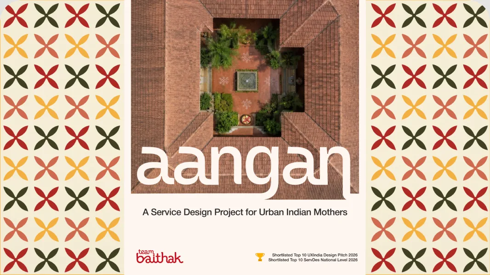
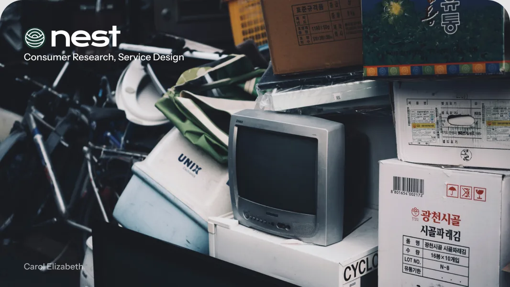
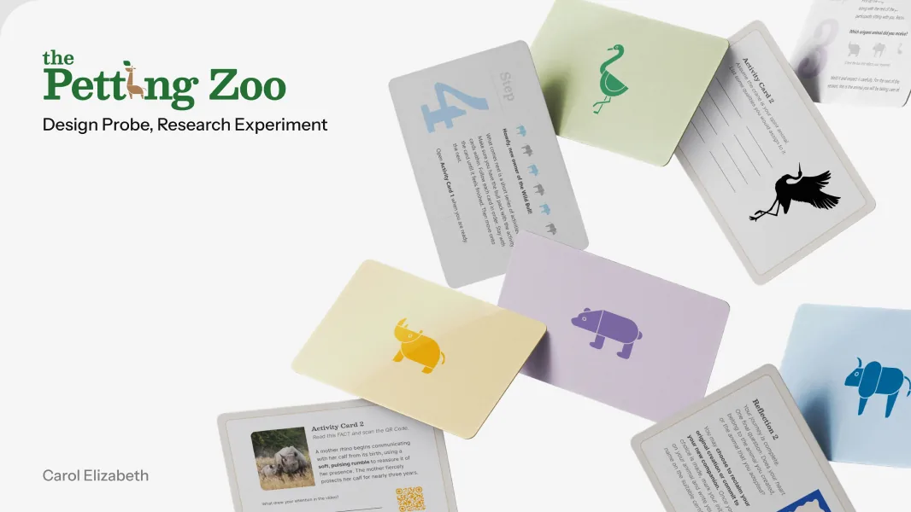

Aangan
Digital Literacy Service for Indian Mothers


2024 - 2026

Digital Literacy Service for Indian Mothers

AC-as-a-Service for Urban India

Cultural Probe Design

I’m a Service and UX Designer who builds cohesive experiences that users navigate intuitively across touchpoints.
Grounded in user research and systems thinking, I treat problems as part of a larger ecosystem and design at scales and context, rather than in siloes. Currently pursuing Masters in Design from IIT Delhi.
Learn More >